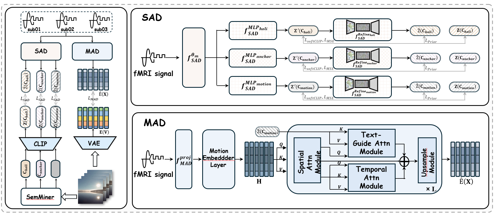
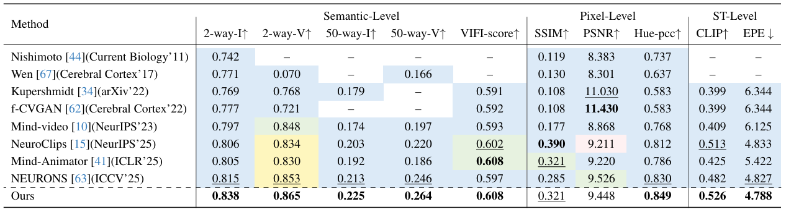
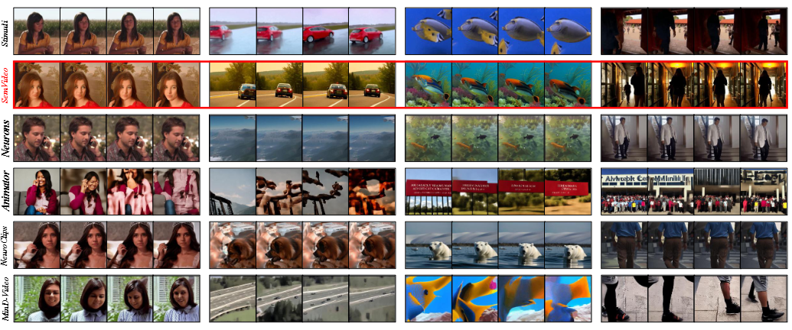

Reconstructing dynamic perception from brain activity
SemVideo: Reconstructs What You Watch from Brain Activity via Hierarchical Semantic Guidance
1Beijing University of Posts and Telecommunications 2University of Surrey
SemVideo tackles two long-standing challenges in fMRI-to-video reconstruction: appearance mismatch across frames and motion misalignment over time. It uses hierarchical semantic guidance to decode what a subject watched with stronger semantic fidelity and temporal coherence.
What makes video reconstruction hard?
Issue 01
Salient objects drift in shape, identity, or appearance.
Issue 02
Temporal transitions become unstable, abrupt, or semantically wrong.
SemVideo
Hierarchical semantics provide anchor, motion, and holistic guidance for decoding and rendering.
Overview
From slow BOLD responses to coherent video dynamics
Reconstructing dynamic visual experiences from fMRI signals is substantially harder than static image decoding because blood-oxygen-level-dependent signals integrate information across seconds rather than individual frames. Previous methods therefore struggle to preserve consistent object identity and realistic motion.
SemVideo addresses this by introducing hierarchical semantic supervision. Instead of asking the model to infer every pixel directly, it first mines multi-level semantic descriptions from the original stimulus and then aligns brain activity with those descriptions before rendering the final video.
Core contributions
- SemMiner decomposes the stimulus into anchor descriptions, motion narratives, and holistic summaries.
- SAD aligns cross-subject fMRI signals to CLIP-style semantic embeddings.
- MAD reconstructs motion patterns with spatial, temporal, and semantic-guided attention fusion.
- Conditional Video Render progressively fuses static, dynamic, and global semantics for generation.
Method
A staged pipeline guided by three levels of semantics

SemMiner
A multimodal LLM breaks each stimulus into three complementary descriptions: what the first frame depicts, how objects move, and what the overall event means.
Semantic Alignment Decoder
Subject-specific projectors and a shared mapper decode semantic embeddings from fMRI while reducing cross-subject variation and noise.
Motion Adaptation Decoder
A tripartite fusion design integrates spatial self-attention, temporal self-attention, and semantic-guided cross-attention to recover motion latents.
Conditional Video Render
The renderer progressively conditions generation on anchor, motion, and holistic cues so the final video stays both semantically grounded and temporally coherent.
Results
State-of-the-art reconstruction quality on CC2017 and HCP

Quantitative highlights
- CC2017: 0.838 2-way-I, 0.865 2-way-V, 0.264 50-way-V, 0.526 CLIP similarity, 4.788 EPE.
- HCP: 0.815 2-way-I, 0.796 2-way-V, 0.858 Hue-PCC, 0.523 CLIP similarity, 4.05 EPE.
- Ablation: removing anchor semantics hurts semantic fidelity most, while removing motion semantics causes the biggest temporal drop.
- Interpretability: ROI analysis links anchor signals to visual regions and motion guidance to MT, MST, TPOJ, and V1.

Takeaway
Why hierarchical semantics matter
Better semantic grounding
Anchor and holistic descriptions give the model stable targets for scene identity, object appearance, and event-level meaning.
Better motion decoding
Motion-oriented narratives and the MAD module contribute measurable gains in temporal order, optical flow consistency, and action coherence.
Better neuroscience alignment
ROI-wise importance patterns reveal that different semantic branches draw from distinct visual and motion-sensitive cortical regions.
Resources
Explore the paper, code, and dataset
Paper
CVPR 2026 manuscript
Download the local PDF included with this project page.
Open PDFCode
Official implementation
Training, inference, and evaluation pipeline for SemVideo.
View repositoryDataset
CC2017-SE on Hugging Face
Hierarchical semantic guidance resources released with the project.
Open datasetCitation
BibTeX
@inproceedings{yang2026semvideo,
title = {SemVideo: Reconstructs What You Watch from Brain Activity via Hierarchical Semantic Guidance},
author = {Yang, Minghan and Yang, Lan and Li, Ke and Zhang, Honggang and Pang, Kaiyue and Song, Yi-Zhe},
booktitle = {Proceedings of the IEEE/CVF Conference on Computer Vision and Pattern Recognition (CVPR)},
year = {2026}
}